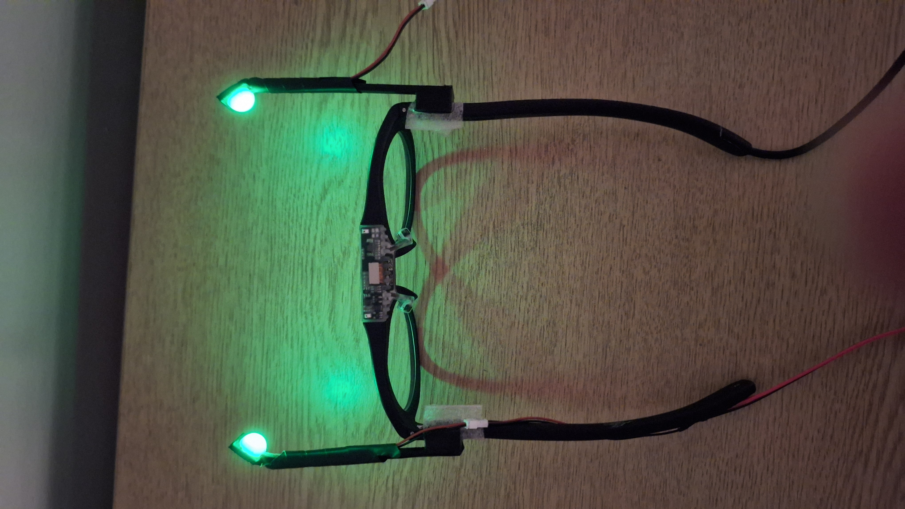
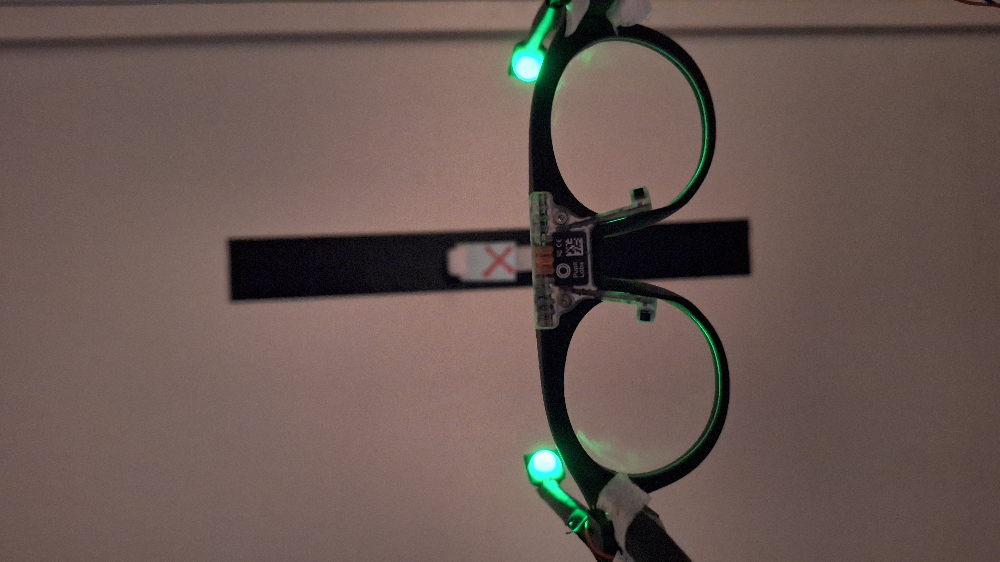

Wearable Glasses Setup (Pupil Labs Neon Integration)
For human visual psychophysics, mobile experiments, and simultaneous eye-tracking paradigms, a miniature stimulation and diffusion assembly is mounted directly to the Pupil Labs Neon eye-tracking frame.
Hardware & 3D Models
- CAD Location:
Hardware/glasses/ - Key Files:
boom_arm.stl/boom_arm.ipt— Custom 3D printed boom arm that attaches securely to the Neon eye-tracker frame.diffuser_fullipt.ipt— Miniature optical diffuser housing that holds the stimulus LED array in front of the subject's visual field without obstructing the eye camera's gaze-tracking optics.Neon_JAN_frame_reference/— Reference frame geometries for fit and alignment validation.


Figure: Earlier prototype of the wearable stimulation glasses mounted to the Pupil Labs Neon eye-tracking frame. Left: Full frame assembly with boom arms and temple-routed wiring. Right: Close-up of illuminated miniature diffuser domes in front of the visual field without obstructing gaze-tracking cameras.
Assembly & Alignment
flowchart TD
subgraph Mechanical["Mechanical Mounting"]
direction LR
NeonFrame["<b>Pupil Labs Neon Frame</b>"]
BoomArm["<b>Custom Boom Arm</b>"]
DiffuserHousing["<b>Miniature Diffuser Housing</b>"]
LEDAssembly["<b>Dual-LED Sub-Assembly</b>"]
NeonFrame --> BoomArm --> DiffuserHousing --> LEDAssembly
end
subgraph Optical["Optical Delivery & Tracking"]
direction LR
Eye["<b>Subject Visual Field</b><br/>Diffuse retinal illumination"]
Gaze["<b>Eye-Tracking Cameras</b><br/>Unobstructed pupil tracking"]
end
LEDAssembly --> Eye
NeonFrame -.-> Gaze- Boom Arm Attachment: The boom arm securely clips/fastens to the Neon eye-tracker frame without altering gaze-calibration geometry.
- Diffuser & LED Insertion: The miniature LED assembly seats directly into the diffuser housing (
diffuser_fullipt.ipt), placing an evenly diffused light source in the peripheral or full visual field. - Cable Routing: Lightweight, flexible silicone wiring runs along the glasses temple to prevent torque or movement artifacts during natural head motion and walking tasks.